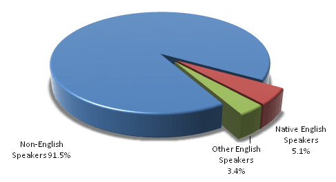
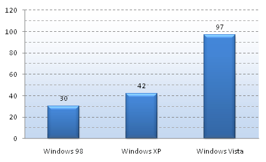

This topic provides a conceptual overview of the Multilingual User Interface (MUI) technology, the platform support it provides for enabling multilingual user experiences, and the benefits it offers to the Windows ecosystem.
On this page:
To benefit from the growth opportunities presented by international markets, Microsoft's platforms and applications support more languages, cultures and markets than ever before.
Language, culture, and market specifics are still extremely relevant to international users, despite increasing globalization trends. The following pie chart shows that non-English speakers still make up 91.5 percent of the world's population.

Worldwide, there are 193 countries and over 6,900 known living languages in use today. English, despite its role as the world's business language, is only spoken by 8.5% of the world's population as a first or second language. To provide native information to 94% of the world's population, this information would need to be available in the 347 (about 5%) of the world's languages that have at least a million speakers. This is especially true as globalization trends have increased the expectations of these users regarding technology and its availability in their markets.
The need to localize software in more languages has increased over the years and Microsoft is now providing Windows Vista and other products in more languages than ever. This evolution is especially clear with Microsoft Windows, as it has gone from supporting 30 languages with Windows 98 to almost 100 with Windows Vista, as illustrated in the following bar chart.

Figure 2—Number of languages supported by Microsoft Windows releases
As discussed in the previous section, globalization and localization of applications have become a necessity in a more globally integrated world. In particular, as more and more enterprises are going global, either internally or through their business networks, the need for multi-lingual applications is increasing dramatically. So are the hurdles that these companies currently face in deploying these applications globally.
Providing support for more languages for Windows operating systems, as well as software applications built for the Windows platform, requires new strategies which enable all major scenarios to be implemented with minimal engineering overhead.
MUI technology is targeted at developers and ISVs aiming to build and support multilingual applications for the Windows platform. MUI is also of key significance to OEMs and enterprises, who can leverage it to deploy the Windows operating system and add applications to computers across different languages through single image deployment.
The fundamental idea behind MUI is to separate the storage of localizable resources from application source code, so as to be able to architect any multilingual application as a combination of a language-neutral core binary and a set of language-specific localized resource files.
Once application source code is stored separately from the localized resources, it becomes easy to dynamically load the appropriate localized resources for a given application context based on a logic that takes into account system, user and application-level settings for the user interface language.
These fundamental attributes of MUI help facilitate business scenarios such as:
The level of support available for a multilingual user experience at the Windows operating system level and for multilingual application development on the Windows platform has evolved over time and across the different versions of Windows.
The supported functionality before Windows Vista was fairly basic, with single-language Windows images and an option to add-on Multilingual User Interface Packs in specific scenarios. No developer support for multilingual applications was available.
With Windows Vista, Microsoft made a significant investment in MUI, and Windows Vista is built from the ground up on a MUI platform. While this represents a major advance in Windows localization strategy, as it is a key enabler for Microsoft to provide Windows in more languages than ever before, it is first and foremost a great advance for Windows users, developers, and customers. It provides several major benefits such as:
The following table provides a detailed overview of the Windows platform support for MUI:
Â
MUI positively impacts multiple aspects of the Windows ecosystem:
Â
Â